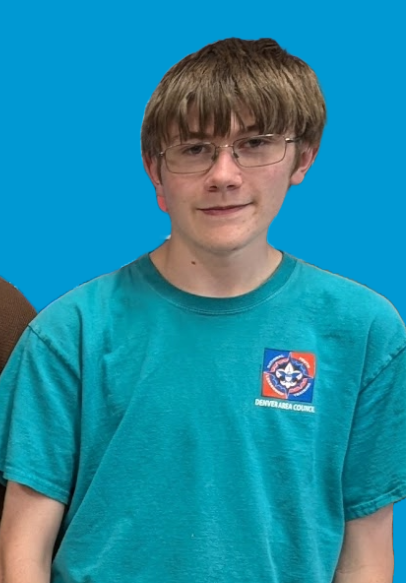
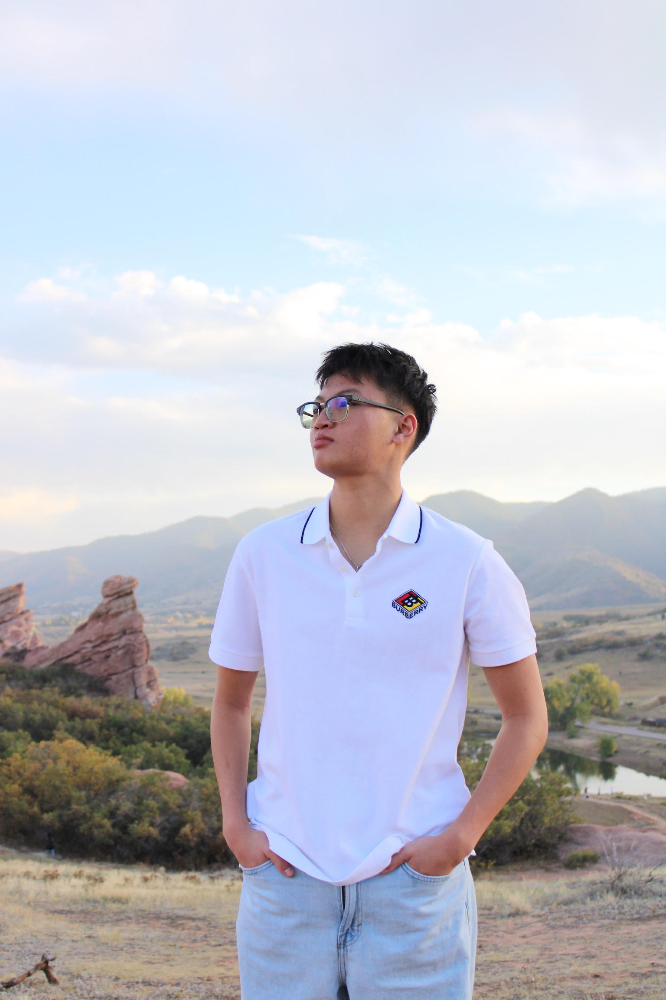
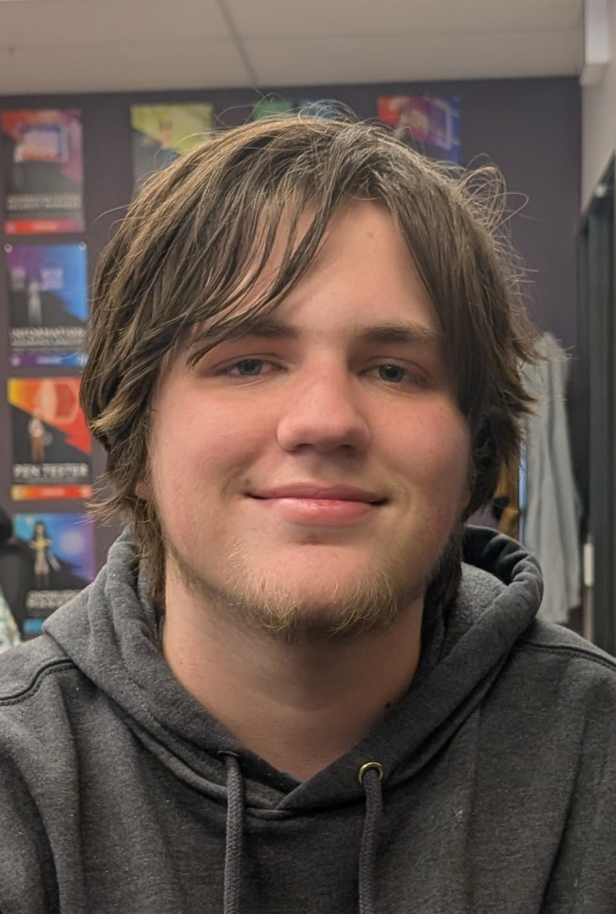

(J)Jacob Delzer

I am a Sophomore at Warren Tech and Senior at Green Mountain High School. Early in high school I
learned about coding from electives and made it a hobby. I self taught what I wanted to know beyond
my classes. I learned Python, HTML, JS, CSS, C++, and TI-Basic. And ever sense I learned of it, I had a
passion for space. And I love using math and logic to solve problems, so it is no wonder I chose
this project.
Hello there! My name is Alex Luong, and I am eager to display my skills. I am from the Denver Metro
Area, where my parents came from Vietnam. In school, I have always had a brain for Math, as well as
Chemistry, hopefully being able to use those traits outside of school. I spend most of my time
playing videos games. I also exercise a lot, playing various sports and hitting the gym 4-5 times a
week.
Beyond gaming and fitness, I love exploring the world of computer science, from problem-solving with
code to understanding how
technology shapes our lives. Whether it's optimizing strategies in Valorant or debugging a tricky
program, I enjoy
challenges that push meto think critically.I'm excited to see where my skills and passions take me
next!
(A)Alex Luong

(M)Mason Kohler

I am a senior in High School. Once I graduate, I plan on going to college to study computer science.
I strive to lead others to success, and try to maintain a positive attitude through difficult times.
Outside of school, I enjoy biking, board games, video games, playing piano, spending time with my
family, and listening to music. As the leader of this project I work hard to ensure the quality of
our product and create a comfortable working environment for everyone involved.
Hi! I am Sammy Ibdah, I am a dedicated student with a passion for technology and learning. Always eager
to explore new ideas, and enjoy diving into complex topics, like new innovations of technology. With a
curious mindset and
a drive for knowledge, I aim to understand the world through both academic study and hands-on
experience.
(S)Sammy Ibdah

(Z)Zedrick Hoover

I really enjoy programming. I have ever since I learned it existed. I am also interested in reading and
writing, especially the fantasy genre. I plan to go into a career of software development and plan to go
to Georgia tech for college in the computer science course.
I also want to make a game at some point, probably using the Roblox engine, but I could also use the
Unity engine. I would like to make money off of it because, well, that would be pretty cool. I am
interested in learning low level programming languages like C and Rust as manipulating the computer
with that amount of control is seems extremely interesting to me.